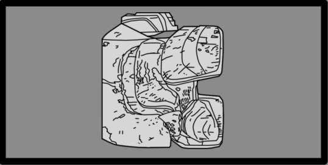
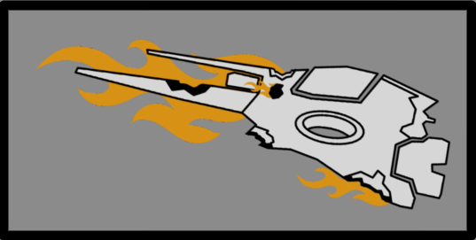

刺魟
Stingray
基本信息
描述
Flying 光能者 unit that deploys strafing runs against 绝地潜兵, dealing 庞大 伤害 over a large area.
阵营
光能者
体型级别
Large?
属性
生命值
800
伤害
伤害类型
技术信息
游戏版本
the Stingray is an 光能者 close 空中支援 aircraft in 绝地潜兵 2. Such units will often fly over the map before they spot a 目标, where they will attempt to strafe said targets with their Plasma Destructors.
生成[edit | edit 来源]
Stingrays spawn intermittently throughout a 任务, coming into 射程 from beyond the 任务 area. They are unable to naturally spawn as part of an enemy patrol, and cannot spawn at the beginning of a 任务.
在……的星球上  Appropriators,
Appropriators,  Mindless Masses，或
Mindless Masses，或  Vote Snatchers subfactions are active, the Stingrays are completely absent.
Vote Snatchers subfactions are active, the Stingrays are completely absent.
行为[edit | edit 来源]
Stingrays passively fly around the map at blinding speeds, encircling 绝地潜兵 at distances of over 800+ meters. They can be spotted while flying thanks to their bright blue plasma trails that briefly follow behind them. They initially fly 2-3 loops around the entire map before engaging 敌人.
They 攻击 by slowing down and 降序 to an advancing hover, telegraphing a long, bright blue column on the ground which they then progressively bombard with sweeping plasma munitions through their Plasma Destructors, akin to an “飞鹰”机枪扫射. Once this is finished, they resume high-速度 flight and 攻击 again once 敌人 are in its 射程.
结构解析[edit | edit 来源]
| 部件名称 | 生命值1 | 护甲值2 | 耐久2 | 主血量占比3 | Overflow Cap?4 | 构造5 | 致命? | ExDR6 | |
|---|---|---|---|---|---|---|---|---|---|
| 主体 | 800 | 70% | - | - | None | 是 | 0% | ||
| Gun Ports | 主体 | 50% | 100% | 是 | None | No | 100% |
Disclaimer: Each highlighted part with a count has its own 生命值. Parts without a count share 生命值 pools.
1) Parts with their HP listed as "Main" do not have their own individual 生命值. All 造成伤害 to these parts is transferred to the enemy's 主生命值 pool.
2) Refer to 护甲 values and enemy 耐久度 as defined in 伤害 for more information.
3) 造成伤害 to a part will also be transferred in part or in full to 主生命值. If set to 0%, no 伤害 is transferred.
4) If set to "Yes", 伤害 transferred 对主血量 is capped by the combined 生命值 and 构造 of the part.
5) 构造 acts as a secondary 生命池 that, once Main or limb 生命值 has been depleted, may decay. The first number is the total 构造 and the second is the 衰退速率. If set to 0/s there is no decay and the 构造 behaves as extra 生命值.
6) ExDR means 爆炸 伤害抗性, and can 射程 from 0 to 100%. If set to 100%, the limb cannot take 爆炸伤害; The 爆炸伤害 will instead 目标 Main. Refer to 伤害 for more information.
- Note: This 机械师, known as Affected By 爆炸 can only occur once per 爆炸, regardless of 100% ExDR parts hit, and the 爆炸's 护甲穿透 must match or exceed 主体护甲 to deal 伤害 对主血量. However, if the same 爆炸 has already damaged Main, this 机械师 will not trigger.
武器配置[edit | edit 来源]
Plasma Destructor Gunpods

The Plasma Destructor is capable of unloading tens of Plasma Bolts every second, with each Bolt capable of blowing a molten hole the size of a human head into armoured 载具 and reducing anything lesser into burnt vapors.
| 属性 | Value | |
|---|---|---|
| 50弹道伤害 50耐久伤害 | ||
| 范围效果 | 125爆炸 | |
| 2m | ||
| 3.50米 | ||
| 5m | ||
| 5/4/5 | ||
| 未知 status （撞击+爆炸伤害） (3.0x 伤害 To Bastion) | ||
| 5/4/3/3 | ||
| 1000发/分钟（4.4s Strafe） | ||
| ↔[125.00] ↕[50.00] | ||
| 10 (Bolt), 30 (Blast) | ||
| 5 (Bolt), 15 (Blast) | ||
| 5 (Bolt), 10 (Blast) | ||
Crash and Burn

A downed Stingray can still present itself as a significant 危险 as it comes plummeting back down to earth, crashing with such 速度 and force it can plow through buildings before finally disintegrating.
| 属性 | Value | |
|---|---|---|
| 0弹道伤害 0耐久伤害 | ||
| 范围效果 | 100爆炸 | |
| 4m | ||
| 8m | ||
| 16米 | ||
| 3/2/3 | ||
| 0/0/0/0 | ||
| Crash and Burn | ||
| Crash and Burn | ||
| 40 | ||
| 50 (布娃娃) | ||
| 40 | ||
爆炸 Demise

The Stingray will signify its death with one final, cataclysmic 爆炸, engulfing anything and everything in superheated 毒气 and molten shrapnel, leaving only smoldering 遗骸.
| 属性 | Value | |
|---|---|---|
| 0弹道伤害 0耐久伤害 | ||
| 范围效果 | 300爆炸 | |
| 5m | ||
| 12米 | ||
| 18米 | ||
| 6/5/6 | ||
| 0/0/0/0 | ||
| 死亡爆炸 | ||
| 死亡爆炸 | ||
| 40 | ||
| 50 (布娃娃) | ||
| 40 | ||
战术信息[edit | edit 来源]
- The strafing path of a Stingray is shown by the blue highlight they leave on the ground after 降序.
- The blue highlight doesn't render on all 浮出地面, such as caved in 地形 from explosions or destroyed buildings that are low to the ground.
- Stingrays are extraordinarily fast and fly far outside of the 射程 of most 武器, making them nearly 不可能 to hit when in-flight. However, their strafing 攻击 slows them down enough to be easily targeted.
- the FAF-14 Spear and StA-X3 W.A.S.P. 发射器's missiles can 锁定 to and chase Stingrays seemingly indefinitely. They will not be able to catch up to them mid-flight however, only when the Stingray slows down to 攻击.[1]
- Notably, the LAS-98 激光大炮 can be used to 摧毁 Stingrays in flight, thanks to its 1000m 射程, and its hitscan nature. Simply track the Stingrays in first person and pull the trigger. Leading the 目标 is not 必需.
- 爆炸 or
 重型 穿甲 支援武器 例如 AC-8 机炮, MLS-4X 突击兵, and APW-1 反器材步枪 excel at destroying stingrays during their strafing run.
重型 穿甲 支援武器 例如 AC-8 机炮, MLS-4X 突击兵, and APW-1 反器材步枪 excel at destroying stingrays during their strafing run.
 中型 护甲 penetrating 支援武器, such as the MG-43 机枪 or M-1000 Maxigun, are highly 高效 at destroying Stingrays.
中型 护甲 penetrating 支援武器, such as the MG-43 机枪 or M-1000 Maxigun, are highly 高效 at destroying Stingrays.
- 激活 SEAF SAM Site is a viable method for shooting down Stingrays, but it is inconsistent and 主题 to 几个 environmental constraints.
- SEAF SAM Sites have a relatively short 有效 交战 射程 and cannot 目标 Stingrays during high-速度 flight.
- SEAF SAM Sites may also be blocked by environmental factors like tall buildings or mountains.
- Stingrays are capable of 友军误伤, and their sweeping bombardments can be utilized to 干掉 large numbers of 光能者 if lured carefully. Even 停靠的跃迁舰 can be damaged/destroyed if they are in the 目标 area. But caution should be taken that all 3 类型 of 监视者 are completely IMMUNE to stingray's plasma bolts.
- Mobility backpacks such as the LIFT-182 Warp Pack or LIFT-850 喷射背包 allow 绝地潜兵 to reliably avoid Stingray bombardments.
- 绝地潜兵 looking to avoid a Stingray’s Plasma Destructor 弹幕 should run towards the side as this allows for the quickest escape.
- A large portion of the Stingray's 伤害 is categorized as 爆炸. Wearing 爆炸-抵抗 护甲 and or going prone can save you if you don't have time to move out of the way.
- By extension, the SH-32 防护罩生成包 or going prone with the SH-20 防弹盾牌 Backpack on your back can also save you from these strafing runs.
琐事[edit | edit 来源]
- Anything killed by a Stingray's Plasma Destructor 弹幕 are completely vaporized, leaving no corpse behind. 绝地潜兵 killed in such fashion will still 掉落 whatever 装备 and samples they had.
- Prior to Version 1.003.002, due to a bug, the Stingray was called the "Interloper" when tagged by a player or when killed by one.
- 绝地潜兵 used to refer to the Stingray with 机器人 voicelines when tagging it. [2]
图集[edit | edit 来源]
- Front
- Back
变更历史[edit | edit 来源]
补丁
描述
1.006.001
2026-02-03
1.003.101
2025-06-10
修复
- Fixed two cases where the Stingray enemy would appear to stop or teleport on death
1.003.002
2025-05-20
修复
- Fixed an issue where Stingray strafing 攻击 sounds could get stuck for a while
未记录修复
- Stingrays are no longer called Interloper when tagged or killing a player.
1.003.000
2025-05-13
Addition
- Added to the game.
参考[edit | edit 来源]
装甲兵 • Brawler • 机械统帅 • Rocket Raider • 特攻 Raider • Marauder • MG Raider • 狂暴者 • 蹂躏者 • Rocket 蹂躏者 • 重型 蹂躏者 • 侦察纵步者 • Reinforced 侦察纵步者 • Hulk Obliterator • Hulk Scorcher • Hulk Bruiser • War Strider • Annihilator Tank • Shredder Tank • Barrager Tank • 炮舰 • 运输舰 • 移动工厂
防空 阵地 • 机器人制造厂 • 机器人 MG 阵地 • 机器人哨站 • Bulk 构筑者 • Cannon Turret • 摧毁 广播 网络 • 探测器 Tower • Enemy Bio-Processors • Erase 恐怖分子 Memorials • 炮舰 设施 • 迫击炮台 • 破坏 Air Base • 战略配备干扰器 • Bunker Turret